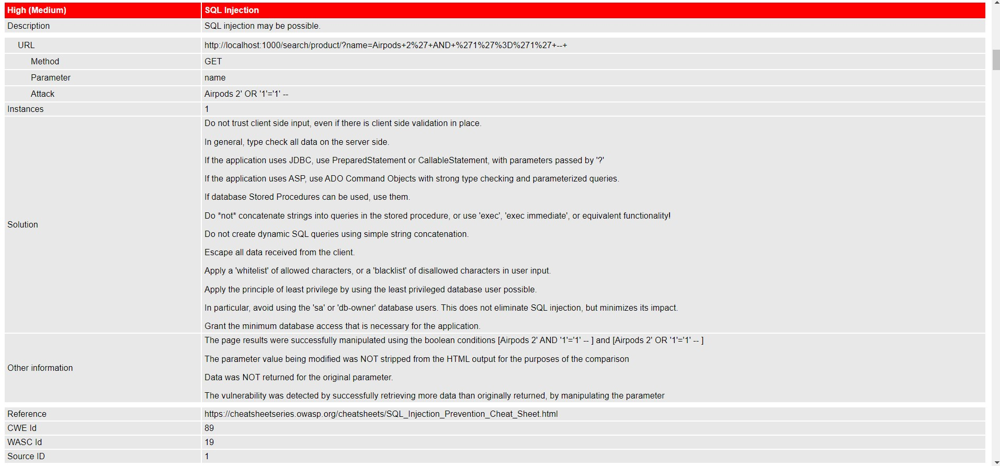
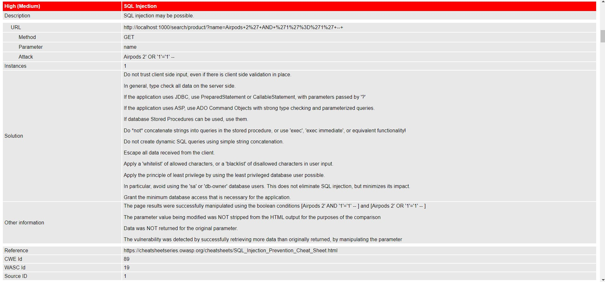

Securing Web APIs
 

Project information
- Category: Web
- Project date: 2019 - 2020
This was a school assignment that required my group to create a web application/API, find vulnerabilities within the application and secure the app by mitigating the vulnerabilities. I was given the task of finding Injection and Mass Assignment vulnerabilities. First, we developed an E-commerce API called Cybernetic and tested it using Bandit, a Static Code Analysis tool, and OWASP ZAP, a Dynamic Code Analysis tool. Based on the insecure version of Cybernetic, I found that the API uses raw SQL queries to retrieve data from the database. These SQL statements could easily be taken advantage of through injection to perform malicious actions, such as displaying a full list of all users. Another vulnerability I found was that the Edit Profile page. By performing injection in the POST request to edit user profile, one could edit this attribute to make themselves an administrator, thus escalating their privileges. I patched the SQL Injection vulnerability by replacing raw SQL statements with SQLAlchemy query functions. SQLAlchemy's query functions perform string escaping which prevents injection from taking place. To patch the Mass Assignment vulnerability, I edited the User object schema to only allow read access to the admin attribute and other attributes which should not be changed by users. There were some challenges we faced through out the project, but the biggest problem was integration of our codes. We were developing the API together and were relying on each other's functions, but each progress review was graded based on individual work. Thus, we had to finish all of our work early to test if the dependencies were working as well.